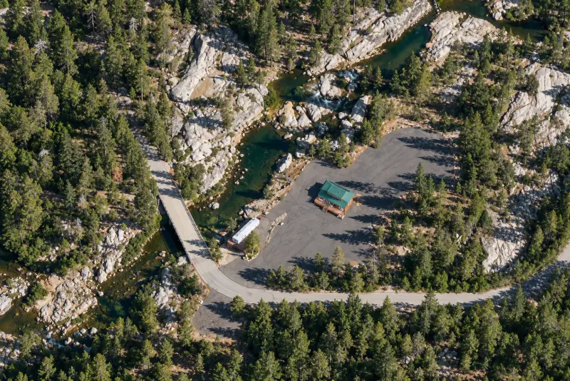
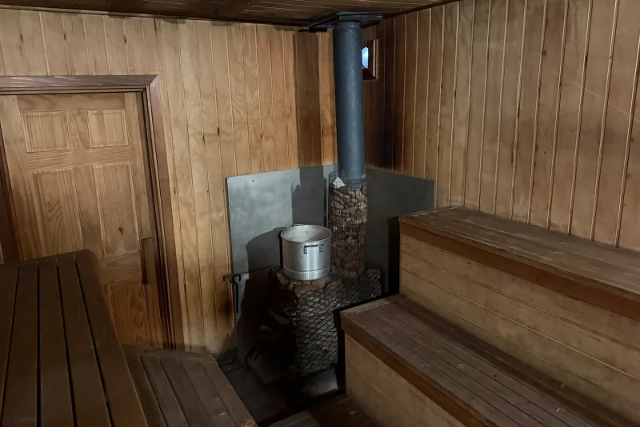
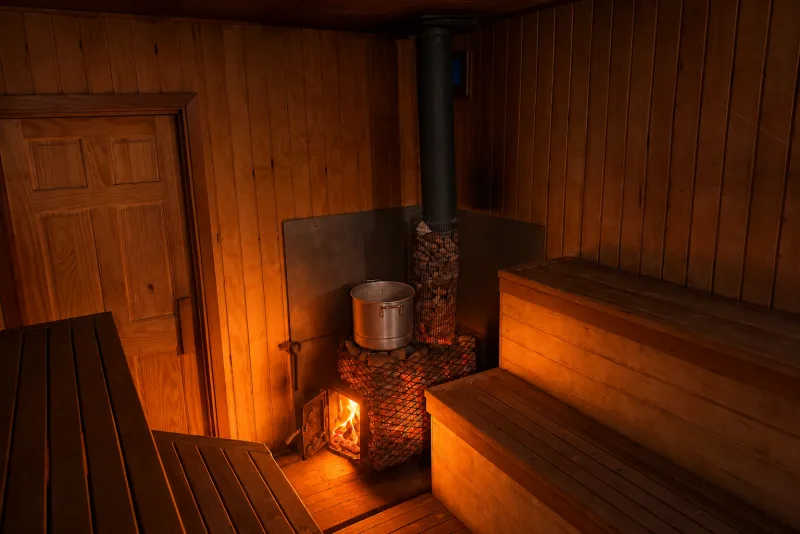
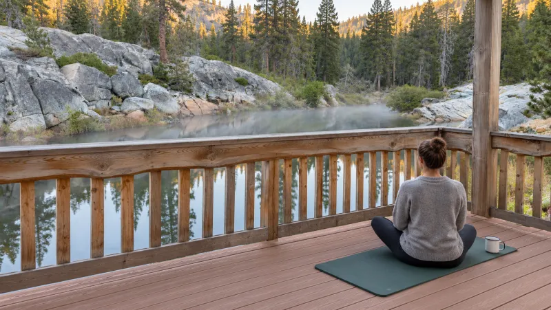

Рядом
- Тропа к озёрам Loch Leven
- 1 миля
- Заправка, Cisco Grove
- Съезд 165
- Заправка, Kingvale
- Съезд 171
- Продукты
- Траки
- Pacific Crest Trail
- 15 мин
- Горнолыжные курорты
- 7–10 миль


Калифорния, Сьерра-Невада. Полтора часа от Сакраменто.
$500 за день, $1 000 за сутки — на всю компанию до 10 человек.
Вокруг 168 акров (68 гектаров) соснового леса: четыре участка за своими воротами. Высота около 1 800 метров, летом здесь прохладнее, чем в Сакраменто.


Нажмите на подпись — откроется фотоИллюстрации по спутниковому снимку и фото участка
Здесь никто не живёт, персонала нет. Дом, баня, река и лес на это время только ваши: приезжаете своей компанией и хозяйничаете сами.



Река — Южная Юба, вода в ней талая и холодная. В заводи плавают с середины июля по октябрь. Зимой окунаются и сразу обратно в парилку, если река в этот день спокойная.
Если вас десять — это $50 с человека за день и $100 за сутки
Летом и осенью доезжаете на машине до самого дома. Зимой машину оставляете у дороги возле ворот и последний километр идёте на снегоступах: снег здесь никто не чистит.
Дом и баня убраны, дрова лежат. Печи в бане и в гостиной топите сами.
Уберите за собой и увезите мусор.
Закройте дом и оставьте ключ там, где скажем. Залог вернём целиком. Если после вас придётся убирать или что‑то чинить, вычтем это из залога.
Сьерра-Невада, между посёлками Cisco Grove и Kingvale, примерно в десяти милях ниже перевала Доннер.

От съезда до ворот пара минут. Время в пути на схеме — для сухой дороги без пробок.

Бронируете вы дом и баню, но лес и река вокруг тоже ваши. Напишите в комментарии к брони, что задумали, и мы скажем, получится ли.
До 15 человек, считая детей. Цена за всё место, а не за каждого: до 10 человек — $500 за день и $1 000 за сутки, от 11 до 15 — $750 и $1 500.
Да, всю территорию целиком — на месяц и дольше. Цену и условия обсуждаем отдельно: напишите нам в Messenger.
Летом и осенью нет: от ворот до дома асфальт. Зимой дальше ворот машина не проедет, а на I-80 требование цепей начинается у Kingvale, в нескольких милях восточнее.
Wi-Fi и интернета на месте нет, есть только мобильная связь. Ловит она пятнами; говорят, лучше всех работает AT&T. Прежде чем ехать, оставьте кому-нибудь адрес и свои планы.
Это горная река: вода ледяная, а под спокойной гладью есть течение. Весной, в половодье с мая до начала июля, она опасна, и в ней никто не купается. Летом заводь под террасой тихая, но детям нужны спасательные жилеты.
Да, но собака остаётся на улице: в дом и в баню с собаками нельзя.
Да, вне пожароопасного сезона. С конца июня по октябрь открытые костры запрещены и здесь, и по всей Сьерре. В это время остаются печь в бане, печь в гостиной и грили на террасе.
Съезд в паре минут, так что у ворот слышно. Сколько доносится до дома и до воды, зависит от ветра и реки.
Звоните или пишите на 916-914-4407. В Facebook пишите странице «Бизнес-клуб EXIT 168» в Messenger. Отвечаем про даты и на любые вопросы, можно по‑русски.